CS184/284A Spring 2025 Homework 2 Write-Up
Link to webpage: https://cal-cs184-student.github.io/hw-webpages-steve-128/hw2/index.html
Link to GitHub repository: https://github.com/cal-cs184-student/hw2-meshedit-qwertyuiop
Overview
Give a high-level overview of what you implemented in this homework. Think about what you've built as a whole. Share your thoughts on what interesting things you've learned from completing the homework.Section I: Bezier Curves and Surfaces
Part 1: Bezier curves with 1D de Casteljau subdivision
de Casteljau’s algorithm:
de Casteljau’s algorithm evaluates a Bezier curve at a parameter t∈[0,1] using repeated linear interpolation between control points. Starting from n control points, it performs linear interpolation between adjacent pairs of control points to generate n−1 new points. This process is repeated until only one point remains, which is the point on the Bezier curve at parameter t.
Implementation details:
To implement the de Casteljau’s algorithm, I have a function that takes in n control points and the parameter t, and computes 1 step of the algorithm, generating n-1 points.
By recursively calling this function, I can compute the point on the curve at any parameter t.
In the function, I computed the n-1 vector, where result[i] = lerp(t, points[i], points[i+1]).
In addition to this, I also have lerp as a helper function that computes the linear interpolation between two points given a parameter t.
Here are the results of a 6 control points Bezier curve:

|

|

|

|

|

|
Part 2: Bezier surfaces with separable 1D de Casteljau
de Casteljau algorithm extends to Bezier surfaces:
de Casteljau’s algorithm extends from Bezier curves to Bezier surfaces by applying the same repeated linear interpolation in two parametric directions (u and v). For a Bezier surface defined by a grid of control points, the algorithm first performs linear interpolation along one parametric direction to compute intermediate points. With these intermediate points, it then applies the same process along the other parametric direction to compute the final point on the surface corresponding to parameters (u, v). As a result, the algorithm finally evaluates the point on the Bezier surface at parameters (u, v) by performing linear interpolation in both directions, which effectively generalizes the 1D de Casteljau’s algorithm to 2D surfaces.
Implementation details:
In the implementation, I wrote a function evaluateStep that evaluates a step of de Casteljau by linearly interpolating adjacent 3D points, which is similar to the function I wrote for Part 1, except that it works on 3D points instead of 2D points.
Using this function, I wrote another function evaluate1D that repeatedly applies this evaluateStep until one point remains.
Lastly, I wrote a function that evaluates the Bezier surface at parameters (u, v) by first calling evaluate1D in one direction to compute intermediate points, and then applying it again in the other direction to compute the final point on the surface.
Here is the screenshot of bez/teapot.bez:

Section II: Triangle Meshes and Half-Edge Data Structure
Part 3: Area-weighted vertex normals
Implementation of Area-weighted vertex normals:
I created a loop that loops over all the halfedges of a given vertex. This allows me to iterate through all the trianges that are adjacent to the vertex. For each triangle, I compute the normal vector by taking the cross product of two edges of the triangle and add that to the accumulated normal vector for the vertex. Finally, I normalize the accumulated normal vector to get the area-weighted vertex normal.
Here are the screenshots of dae/teapot.dae with and without vertex normals:
|
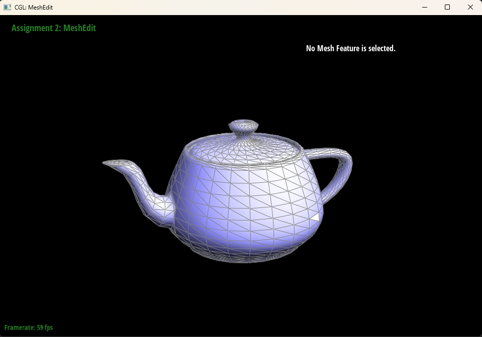 |
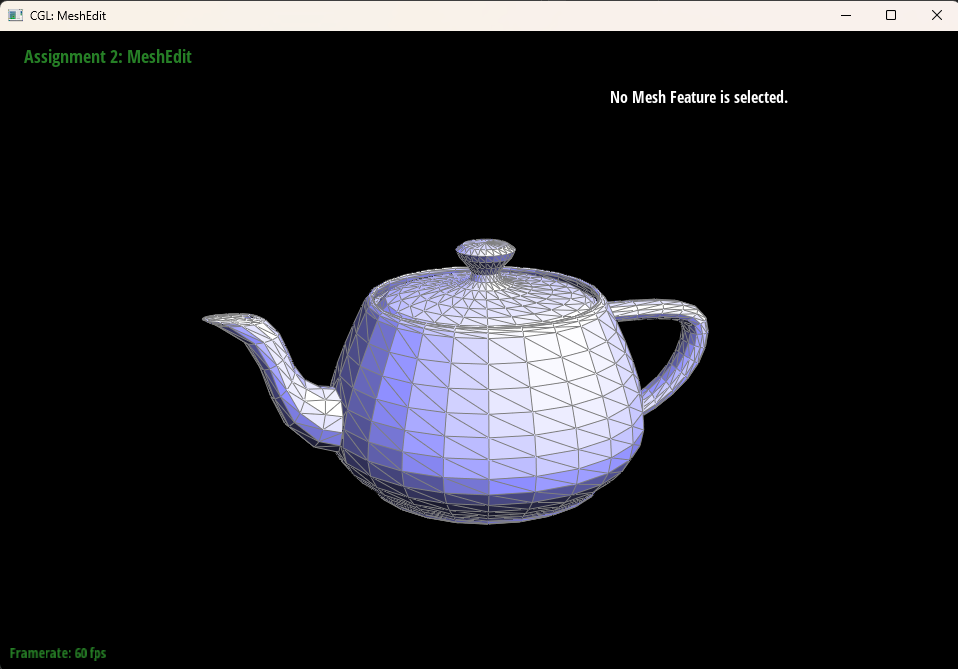 |
Part 4: Edge flip
Implementation of edge flip:
Following the implementation reccomendations in the spec, I first check if the edge is a boundary edge. If it is, I return and don't preform the edge flip. If it is not a boundary edge, I perform the edge flip by updating the halfedge data structure accordingly. Specifically, I saved the halfedges, vertices, and faces that are involved in the edge flip to temporary variables to prevent unexpected behavior. Then, I drew the halfedge structure on my notes and indicated each part that I've saved to temporary variables. Next, I start by updating the halfedge structure that I drew in my notes then convert that into code. Luckily, the only debugging part was not noticing that the order of code matters when updating the halfedge data structure, which was found by double-checking the order of updates in my notes. Finally, I was able to successfully implement edge flip, and spent a bit of time testing and verifying the correctness of the implementation.
Here are the screenshots of dae/teapot.dae with and without edge flips:
|
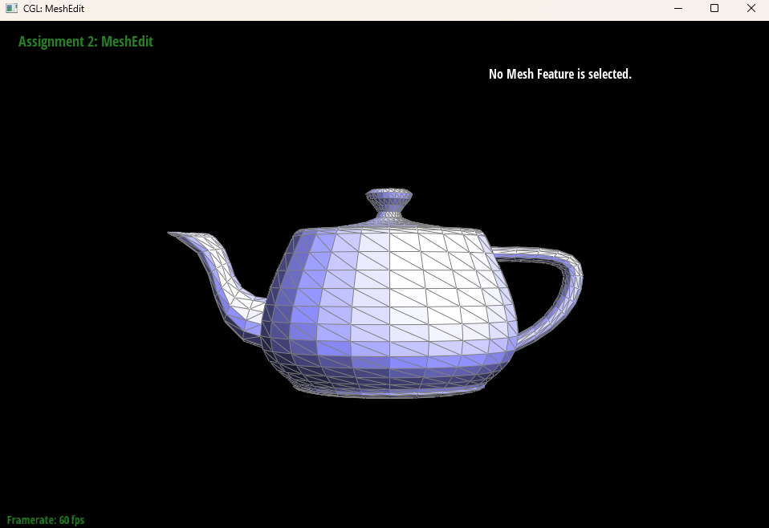 |
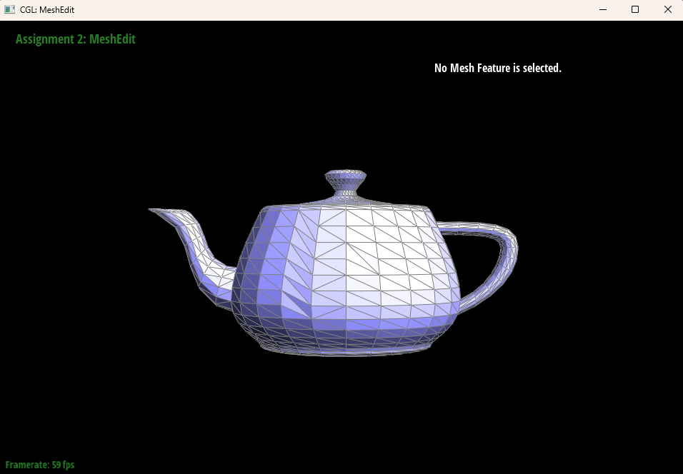 |
Part 5: Edge split
Implementation of edge split:
Similar to edge flip, I first check for boundary edge, save the halfedge structures, and draw the halfedge structure on my notes.
What's different from edge flip is that edge split involves more halfedges, vertices, and faces, so I had to be more careful in saving the correct halfedges, vertices, and faces to temporary variables.
After saving all the necessary halfedges, vertices, and faces to temporary variables and drawing the halfedge structure on my notes, I created new variables for the new halfedges, vertices, and faces that are created by the edge split.
Learning from the debugging experience of edge flip, I was careful to double-check the order of updates in my notes before converting that into code, which helped me avoid bugs related to the order of updates.
Then, it is just putting the notes into code, and I was able to successfully implement edge split.
However, I did encounter a new bug, which is just intializing new vertex, halfedges, and faces with VertexIter(), HalfedgeIter(), and FaceIter() respectively, which did not correctly initialize the new vertex, halfedges, and faces.
As a result, I thought my logic on my notes was incorrect. Turns out it was just the new vertex, halfedges, and faces that were not correctly initialized, which caused the implementation to not work as expected.
Finally, I also spent some time testing and verifying the correctness of the implementation after fixing the bug.
Here are the screenshots of dae/teapot.dae with and without edge flips:
|
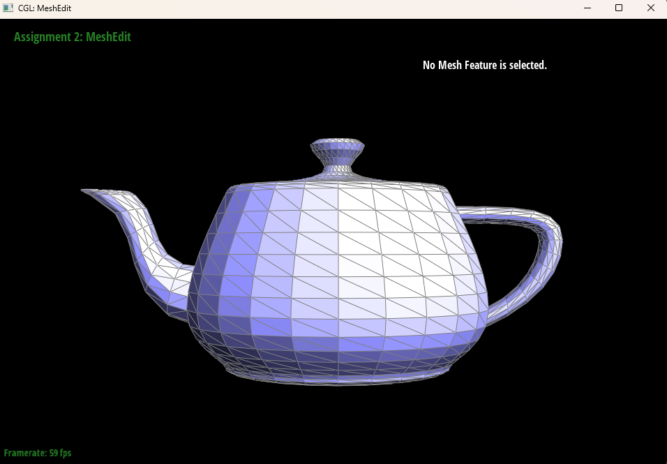 |
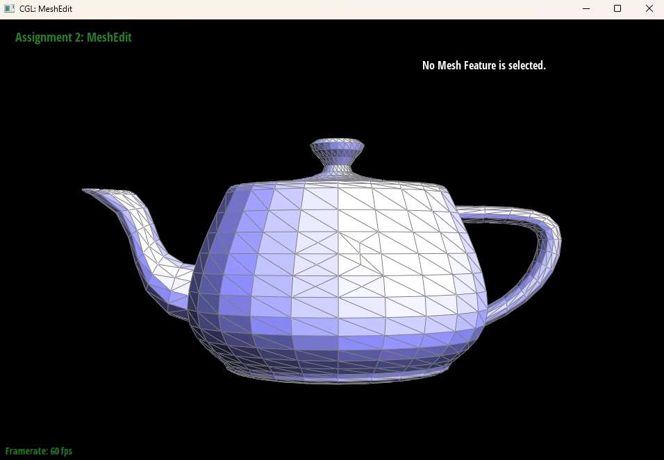 |
|
|
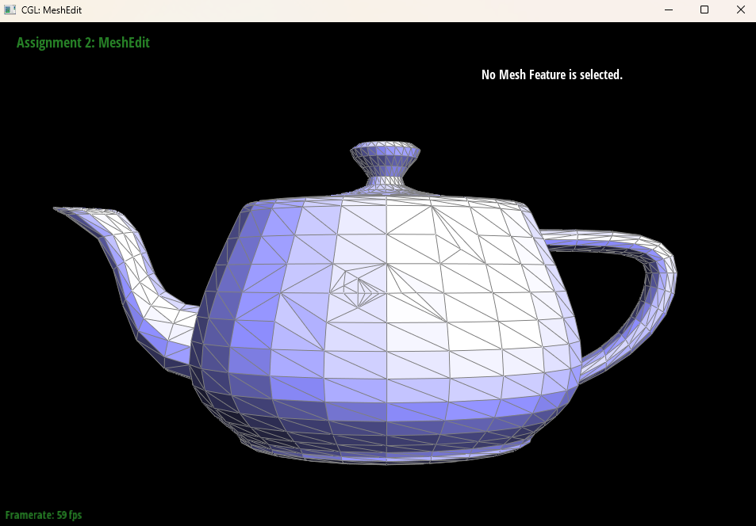 |
Part 6: Loop subdivision for mesh upsampling
Implementation of Loop subdivision:
I implemented Loop subdivision by followint the hint on the spec. Basically, I first computed the new vertex positions for the existing vertices and edges. Then I performed edge splits on all the edges, and mark the newly cretaed vertices and edges as new. Specifically, I computed the new vertex positions by following the formulas below:
edgeSplit function.
Specifically, I initially marked one of the two edges created by splitting an original edge as isNew = true.
However, this edge is actually one half of the original edge and should not be flipped during the Loop subdivision flip step.
Because of this incorrect flag, the algorithm flipped edges that were meant to remain fixed, producing incorrect connectivity and weird subdivision behavior.
Here are the screenshots of dae/beetle.dae with and without Loop subdivision:
From the screenshots below, we can see that the mesh after 3 Loop subdivisions is much smoother at the sharp corners and edges than the original mesh. This is especially noticeable in the holes of the beetle mesh. In theory, prespliting the edges around the holes should help preserve the hole structure after Loop subdivision as it provides more local control near sharp features.
|
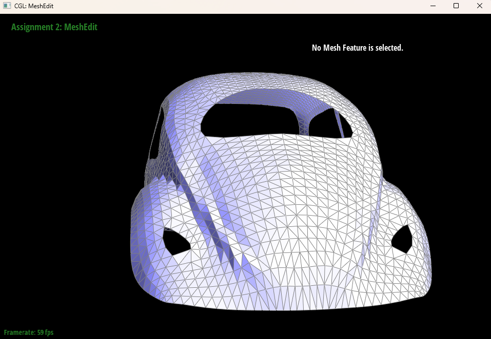 |
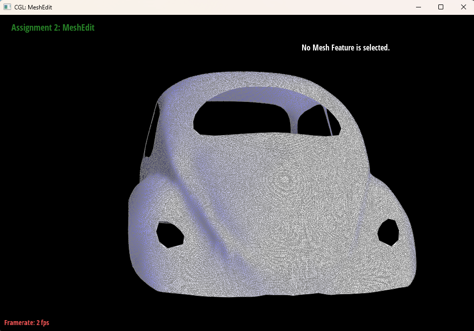 |
Here are the screenshots of dae/cube.dae with and without Loop subdivision:
From the screenshots below, we can see that the mesh after 3 Loop subdivisions and no presplitting is somewhat asymmetric and has some weird artifacts, which is because the original cube mesh has very few vertices and edges. As a result, the Loop subdivision does not have enough local control to preserve the sharp features of the cube. So I did a bit of preprocessing by splitting on every edges on the face of the cube, which resulted in every face being subdivided into 4 triangles. After this preprocessing step, the 3 loop subdivisions produced a round symmetric mesh. This is inevitable becasue I did not do the extra credit of supporting meshes with boundary. Dispite that, preprocessing does create more local control for the loop subdivision and resulted in a better mesh than no preoprocessed mesh.
|
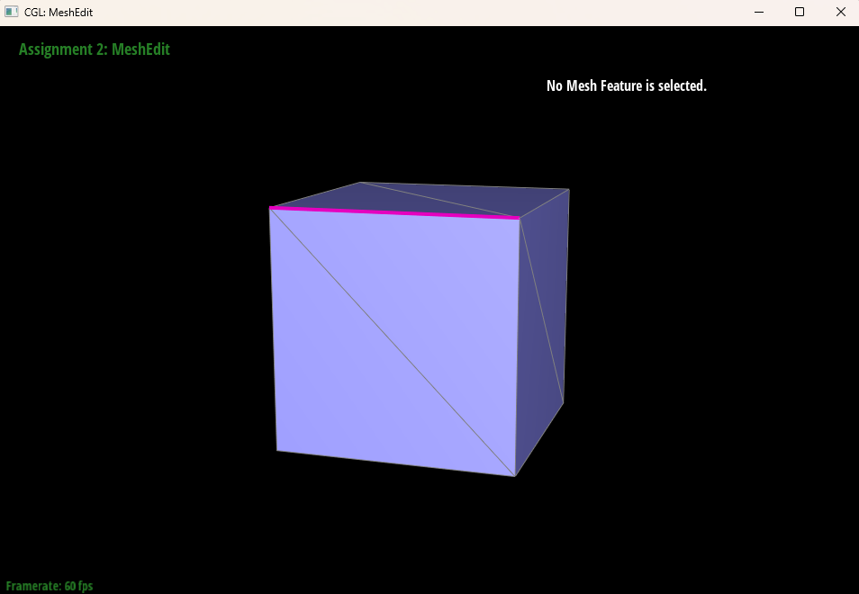 |
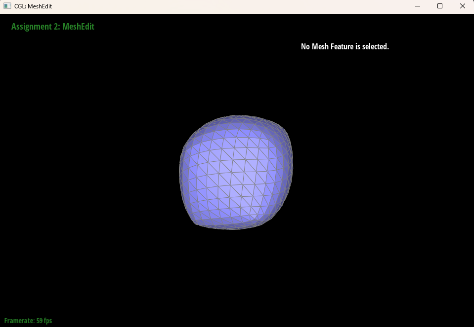 |
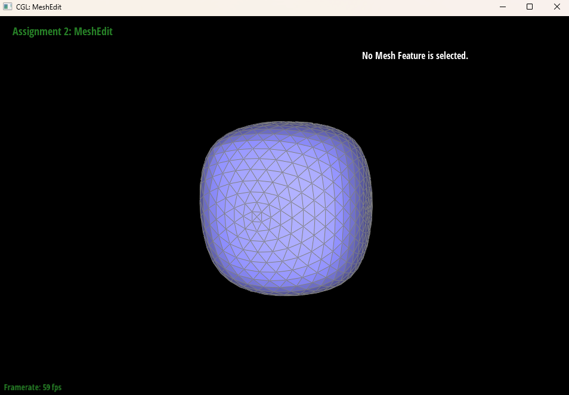
(Optional) Section III: Potential Extra Credit - Art Competition: Model something Creative
Additional Notes (please remove)
- You can also add code if you'd like as so:
code code code - If you'd like to add math equations,
- You can write inline equations like so: \( a^2 + b^2 = c^2 \)
- You can write display equations like so: \[ a^2 + b^2 = c^2 \]